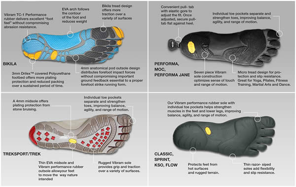

Welcome to Vibram Fivefingers online store!

Barefoot Technology, the natural way to move
The typical human foot is an anatomical marvel of evolution with 26 bones, 33 joints, 20 muscles, and hundreds of sensory receptors, tendons and ligaments. Like the rest of the body, to keep our feet healthy, they need to be stimulated and exercised.
- The thin and flexible Vibram runner sole offers a gecko-like grip over a variety of terrain and protects bare feet
- A lightweight glove like construction with individual compartments for each toe allow the flexible forefoot to adapt to the ground and provide the haptic response
- Upper material: durable Polyamide 2-way stretch fabric
- Sole: Vibram sole – some of the finest outdoor soles in world, allowing the shoe to be completely flexible and provide firm protection from sharp objects
- Product machine washable at low temperatures/air dry
Vibram Sole Technology at work in our Product Range

6 key reasons to wear or train in FiveFingers
Most of us are not used to be being barefoot for continuous and long periods of time, it is therefore important to understand that wearing Vibram FiveFingers is a new method of movement for your body. We recommend for all customers to start slowly in order to allow the body to adjust and strengthen muscles that have become dormant from wearing conventional footwear.
6 Key Reasons to Wear or Train in Vibram FiveFingers
Vibram FiveFingers is different than any other footwear on the planet. Not only do they bring you closer to your environment, FiveFingers deliver a number of positive health benefits – by leveraging all of the body’s natural biomechanics, so you can move how nature intended.
- Strengthens Muscles in the Feet and Lower Legs - wearing FiveFingers will stimulate and strengthen muscles in the feet and lower legs, improving general foot health and reducing the risk of injury.
- Improves Range of Motion in Ankles, Feet and Toes – no longer ‘cast’ in a shoe, the foot and toes move more naturally.
- Stimulates Neural Function Important to Balance and Agility - when wearing Vibram FiveFingers, thousands of neurological receptors in the feet send valuable information to the brain, improving balance and agility.
- Improves Proprioception and Body Awareness – those same neurological receptors heighten body awareness, sending messages about body mechanics, form, and movement.
- Eliminates Heel Lift to Align the Spine and Improve Posture – By lowering the heel, our bodyweight becomes evenly distributed across the footbed, promoting proper posture and spine alignment.
- Allows the Foot and Body to Move Naturally, Which Just FEELS GOOD.